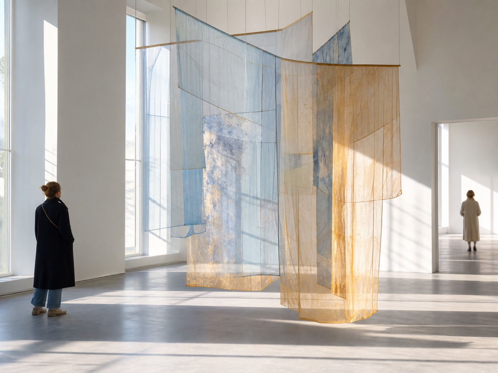
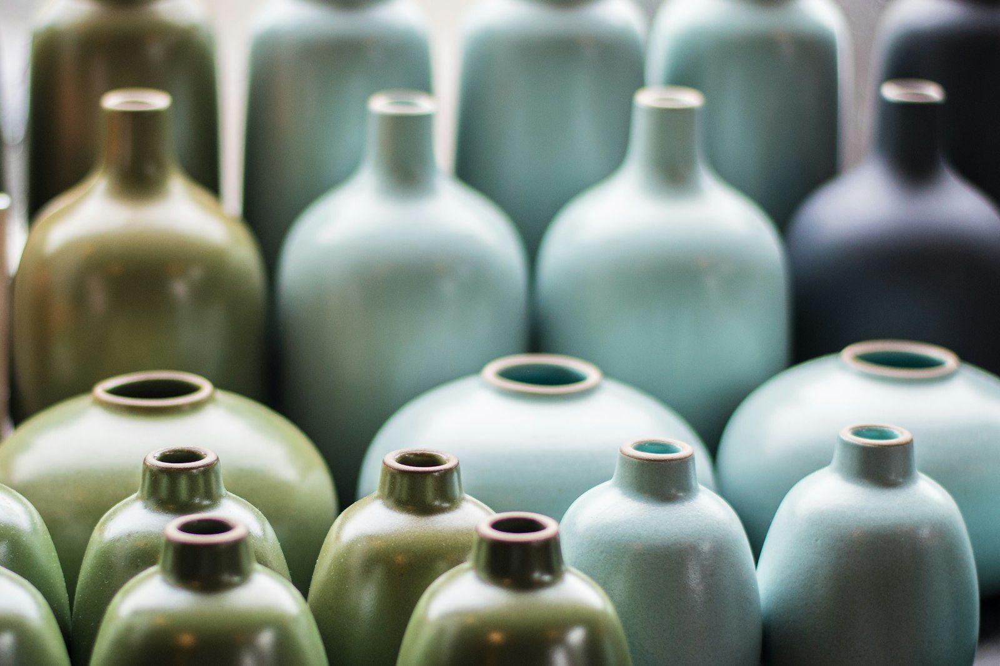
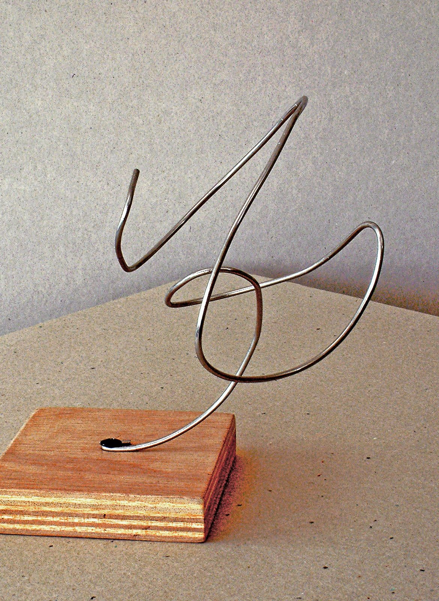
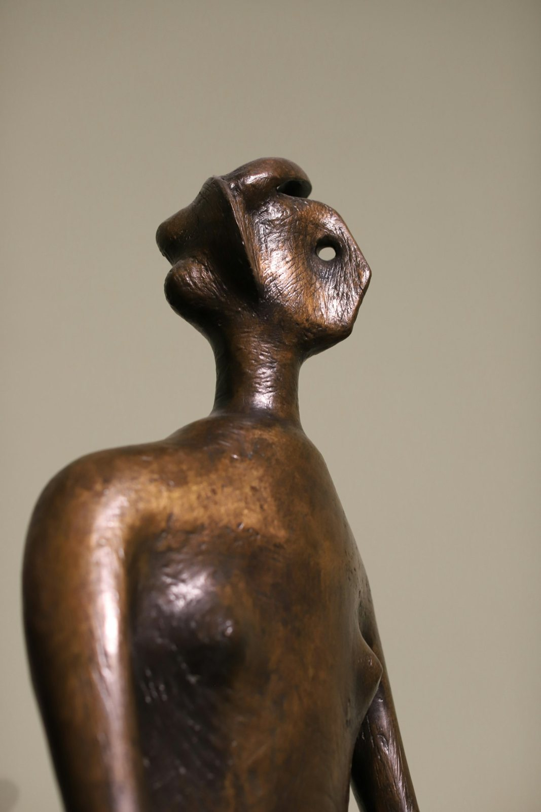

SYNO is a platform for Cypriot contemporary art — exhibitions, artists, places and open calls across the island.
What's on in Cyprus?
6 events happening this weekend
The map is being built — places and events appear here as organisations join


Open Call 2026
Applications closed
Winners will be announced on 31 October


Rea Charalambidou
b. 1983, Nicosia · based in Paphos
Textile & Mixed media · 15 works


Maria Loizidou
b. 1979, Nicosia · based in Nicosia
Sculpture & Textile · 7 works

Theodoulos Antoniou
b. 1985, Larnaca · based in Larnaca
Performance & Sound · 5 works

Lia Haralambous
b. 1993, Nicosia · based in Nicosia
Textile · 8 works

Christos Kyriakides
b. 1981, Larnaca · based in Larnaca
Sculpture · 11 works
New in the Artist Registry



Elena Andreou
b. 1987, Limassol · based in Nicosia
Painting & Installation · 12 works



Andreas Savva
b. 1991, Larnaca · based in Limassol
Sculpture & Video · 9 works

Sophia Hadjipapa
b. 1992, Limassol · based in Limassol
Painting · 6 works

Petros Efthymiou
b. 1976, Nicosia · based in Larnaca
Sculpture · 4 works
Eleni Papadopoulou
b. 1988, Paphos · based in Nicosia
Ceramics · 8 works
Stavros Michael
b. 1995, Larnaca · based in Nicosia
Video & Sound · 3 works
Rea Charalambidou
b. 1983, Nicosia · based in Paphos
Textile & Mixed media · 15 works
Maria Loizidou
b. 1979, Nicosia · based in Nicosia
Sculpture & Textile · 7 works

Niki Charalambidou
b. 1990, Paphos · based in Paphos
Photography · 6 works
Theodoulos Antoniou
b. 1985, Larnaca · based in Larnaca
Performance & Sound · 5 works
Lia Haralambous
b. 1993, Nicosia · based in Nicosia
Textile · 8 works
Christos Kyriakides
b. 1981, Larnaca · based in Larnaca
Sculpture · 11 works
Stories from the island

About SYNO
A contemporary art institution and working infrastructure for artistic production, public programming, and cross-regional circulation
Based in Limassol and working across Cyprus, SYNO connects artists, organisations and audiences through the Art Map, Artist Registry, Open Calls and editorial stories.
Places on the Art Map

NiMAC
Museum · Nicosia
Old Townopen Tue–Sun

Thkio Ppalies
Independent space · Nicosia
Strovolosweekends only

Limassol Municipal Gallery
Gallery · Limassol
Old Townopen Tue–Sun

Larnaca Art Lab
Artist-run · Larnaca
Mackenzieby appointment

Limassol Art Centre
Independent space · Limassol
Town Centreopen Sat–Sun

Paphos Archaeological Museum
Museum · Paphos
Kato Paphosopen Mon–Sun
Do you run one of these spaces?
Many pages were added by SYNO — claim yours to edit the details and publish events